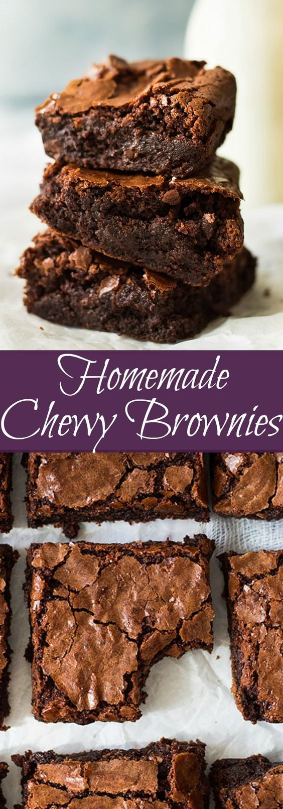

Homemade Chewy Brownies
Ingredients
- 1 1/4 cups sugar
- 1/4 cup water
- 2 oz unsweetened chocolate
- 3/4 cup all purpose flour
- 1/3 cup regular unsweetened cocoa powder
- 1/2 cup semi-sweet chocolate chips
- 1/4 tsp baking powder
- Pinch of salt
- 2 large eggs, lightly beaten
- 1/2 cup vegetable oil
- 1 tsp vanilla
Directions
- Preheat oven to 350 degrees F (177 degrees C). Line an 8x8 or 9x9 baking pan with parchment paper or foil and lightly grease with cooking spray. Set aside.
- In a small saucepan combine the sugar, water and unsweetened chocolate. Cook over medium low heat until chocolate is melted and smooth (about 3-5 min). The sugar will not be dissolved. Let mixture cool slightly (about 5 min).
- In a large bowl add mix together the flour (spoon flour into measuring cup and level off with the back side of a knife for accurate measurement), cocoa powder (spoon cocoa powder into measuring cup and level off with the back of a knife for accurate measurement), chocolate chips, baking powder and salt. Mix until combined. Pour in the oil, eggs and vanilla. Pour in the melted chocolate and stir all just until combined. Don't overmix!! Spread evenly into prepared pan and bake for 40 minutes or until a toothpick inserted comes out with some moist crumbs. DO NOT OVERBAKE if you want moist and chewy brownies. Cool completely before cutting.

Homemade Chewy Brownie Recipe Link
Contact Me
danielle1.chard@umconnect.umt.edu
University of Montana
32 Campus Drive
Missoula, MT 59801